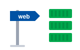
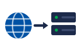
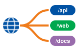
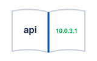
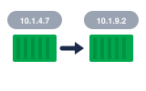
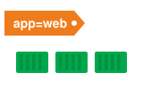
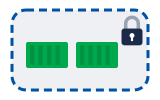
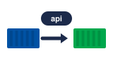

01The problem · បញ្ហាIP
Pods come and go, and their IP addresses change.
Pod មក ហើយទៅ ហើយ IP address របស់វាផ្លាស់ប្តូរ។
Service និង Ingress · ធ្វើឲ្យកម្មវិធីរកគ្នាឃើញ និងបើកឲ្យអ្នកប្រើចូល
Pod ប្តូរ IP ជានិច្ច។ Service ផ្តល់ឈ្មោះថេរ ហើយ Ingress បើកទ្វារឲ្យអ្នកប្រើពីខាងក្រៅ។

Stable nameឈ្មោះថេរ
Public IPIP សាធារណៈ
Routingបញ្ជូនតាម URL
DNSឈ្មោះ → អាសយដ្ឋានតាមលំដាប់៖ IP ប្តូរ → service → ingress → ហៅគ្នាតាមឈ្មោះ។

Space listen · ← → move · K show text
Pods come and go, and their IP addresses change.
Pod មក ហើយទៅ ហើយ IP address របស់វាផ្លាស់ប្តូរ។
A service gives a group of pods one stable name.
Service ផ្តល់ឈ្មោះថេរមួយ ឲ្យក្រុម pod មួយ។

It finds its pods by their labels.
វារក pod របស់វា តាម label។

A ClusterIP service is only reachable inside the cluster.
Service ប្រភេទ ClusterIP អាចចូលបានតែពីក្នុង cluster ប៉ុណ្ណោះ។
A LoadBalancer service gets a public IP from the cloud.
Service ប្រភេទ LoadBalancer ទទួលបាន public IP ពី cloud។
An ingress sends web traffic to services by URL path.
Ingress បញ្ជូនចរាចរណ៍ web ទៅ service តាម URL path។
The ingress controller also handles HTTPS certificates.
Ingress controller ក៏គ្រប់គ្រងវិញ្ញាបនបត្រ HTTPS ផងដែរ។

Inside the cluster, apps call each other by service name.
ក្នុង cluster កម្មវិធីហៅគ្នាទៅវិញទៅមក តាមឈ្មោះ service។
DNS turns that service name into an address.
DNS បំប្លែងឈ្មោះ service នោះ ទៅជាអាសយដ្ឋាន។
ClusterIP is internal only. Use port-forward, an ingress or a LoadBalancer.
ClusterIP ប្រើបានតែខាងក្នុងប៉ុណ្ណោះ។ ប្រើ port-forward, ingress ឬ LoadBalancer។
ClusterIP គឺជាប្រភេទលំនាំដើម ហើយវាមិនបើកទៅខាងក្រៅទេ។
No. One ingress can route to many services, and it costs less.
ទេ។ Ingress មួយអាចបញ្ជូនទៅ service ជាច្រើន ហើយវាថោកជាង។
Load balancer នីមួយៗលើ cloud គិតលុយដាច់ដោយឡែក។
It calls the backend service by its name.
វាហៅ service របស់ backend តាមឈ្មោះរបស់វា។
The service has no ready pods behind it. Check the labels.
Service គ្មាន pod ដែលរួចរាល់នៅពីក្រោយវាទេ។ ពិនិត្យ label មើល។
Use kubectl port-forward to open it on localhost.
ប្រើ kubectl port-forward ដើម្បីបើកវានៅលើ localhost។
Tap a word's play button to hear it. Hide one side, then recall it before you tap to check.
Pods come and go, and their IP addresses change.
Pod មក ហើយទៅ ហើយ IP address របស់វាផ្លាស់ប្តូរ។
A service gives a group of pods one stable name. It finds its pods by their labels. A ClusterIP service is only reachable inside the cluster.
Service ផ្តល់ឈ្មោះថេរមួយ ឲ្យក្រុម pod មួយ។ វារក pod របស់វា តាម label។ Service ប្រភេទ ClusterIP អាចចូលបានតែពីក្នុង cluster ប៉ុណ្ណោះ។
A LoadBalancer service gets a public IP from the cloud. An ingress sends web traffic to services by URL path. The ingress controller also handles HTTPS certificates.
Service ប្រភេទ LoadBalancer ទទួលបាន public IP ពី cloud។ Ingress បញ្ជូនចរាចរណ៍ web ទៅ service តាម URL path។ Ingress controller ក៏គ្រប់គ្រងវិញ្ញាបនបត្រ HTTPS ផងដែរ។
Inside the cluster, apps call each other by service name. DNS turns that service name into an address.
ក្នុង cluster កម្មវិធីហៅគ្នាទៅវិញទៅមក តាមឈ្មោះ service។ DNS បំប្លែងឈ្មោះ service នោះ ទៅជាអាសយដ្ឋាន។
Q. Why can't I open my ClusterIP service in the browser?
Q. ហេតុអ្វីខ្ញុំបើក service ClusterIP ក្នុង browser មិនបាន?
A. ClusterIP is internal only. Use port-forward, an ingress or a LoadBalancer.
A. ClusterIP ប្រើបានតែខាងក្នុងប៉ុណ្ណោះ។ ប្រើ port-forward, ingress ឬ LoadBalancer។
Q. Do I need one load balancer per service?
Q. តើខ្ញុំត្រូវការ load balancer មួយសម្រាប់ service នីមួយៗទេ?
A. No. One ingress can route to many services, and it costs less.
A. ទេ។ Ingress មួយអាចបញ្ជូនទៅ service ជាច្រើន ហើយវាថោកជាង។
Q. How does the frontend call the backend?
Q. Frontend ហៅ backend យ៉ាងដូចម្តេច?
A. It calls the backend service by its name.
A. វាហៅ service របស់ backend តាមឈ្មោះរបស់វា។
Q. Why do I get a 503 error?
Q. ហេតុអ្វីខ្ញុំទទួលបាន error 503?
A. The service has no ready pods behind it. Check the labels.
A. Service គ្មាន pod ដែលរួចរាល់នៅពីក្រោយវាទេ។ ពិនិត្យ label មើល។
Q. How do I test a service from my laptop?
Q. តើខ្ញុំសាក service ពី laptop យ៉ាងដូចម្តេច?
A. Use kubectl port-forward to open it on localhost.
A. ប្រើ kubectl port-forward ដើម្បីបើកវានៅលើ localhost។
Which port does it listen on?
វាស្តាប់នៅលើ port មួយណា?
Can you check the endpoints?
អាចពិនិត្យ endpoints បានទេ?
Say it in your head first, then tap the box to check.